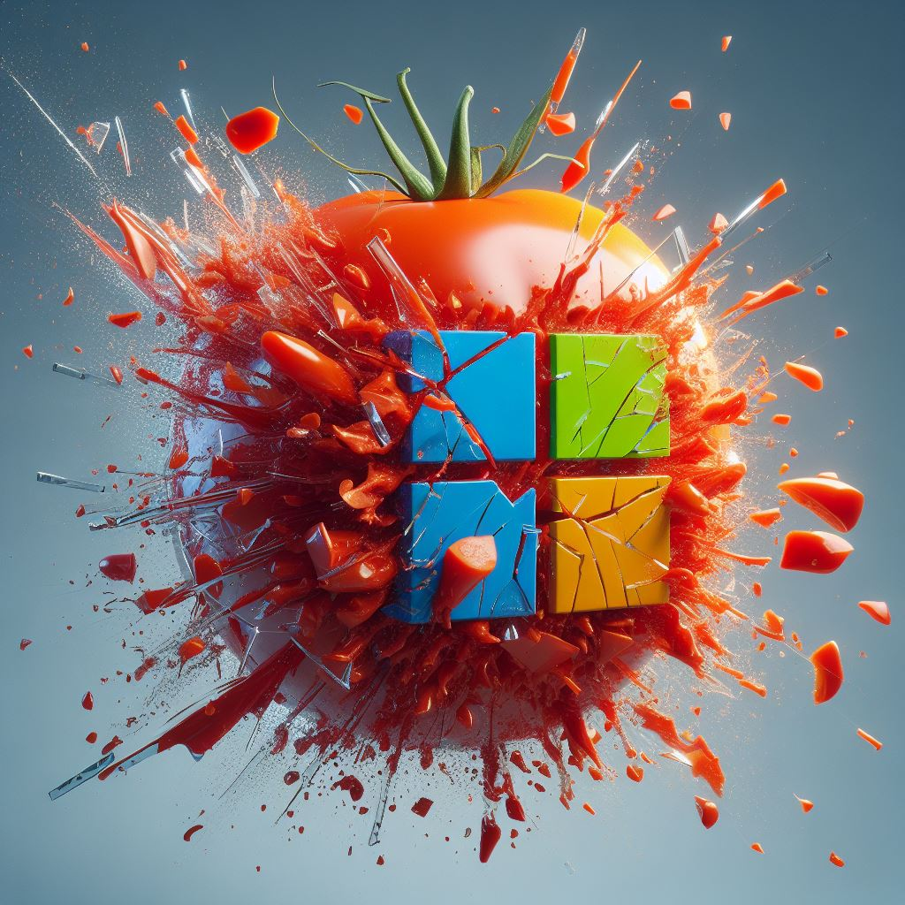
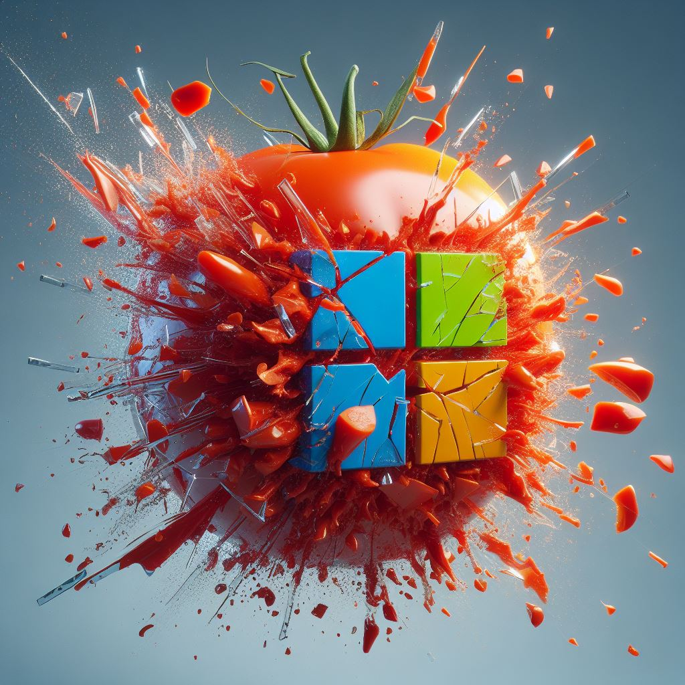
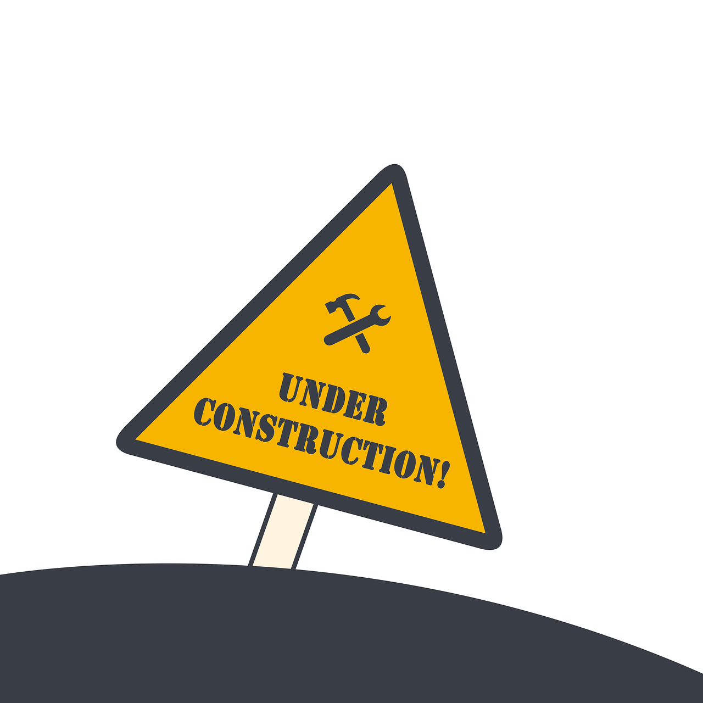

Microchoft
Microchoft: Explota una vulnerabilidad en un sistema Windows 7 usando Metasploit para obtener acceso y obtener las banderas de usuario y administrador.
Microchoft: Explota una vulnerabilidad en un sistema Windows 7 usando Metasploit para obtener acceso y obtener las banderas de usuario y administrador.
Proximamente...
